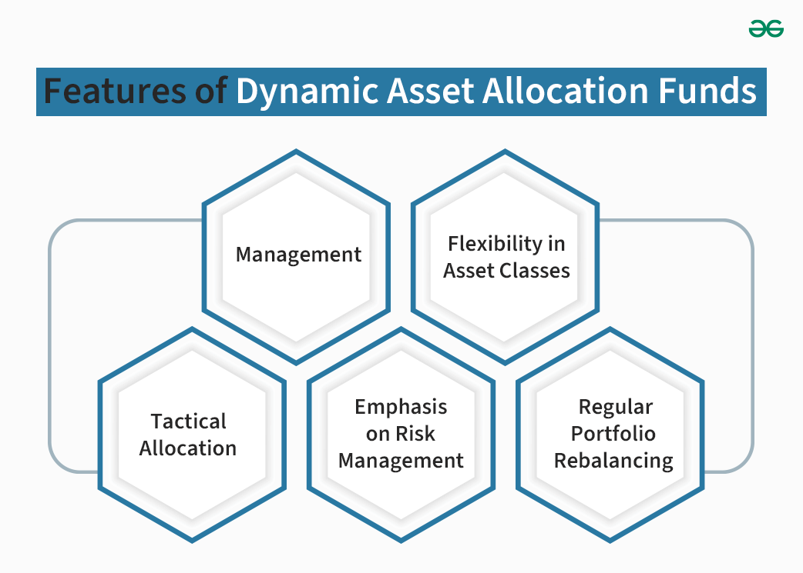
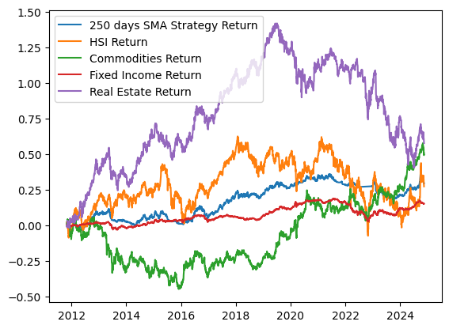
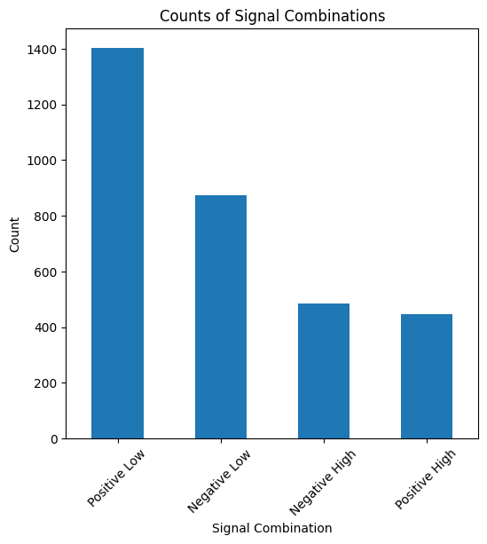
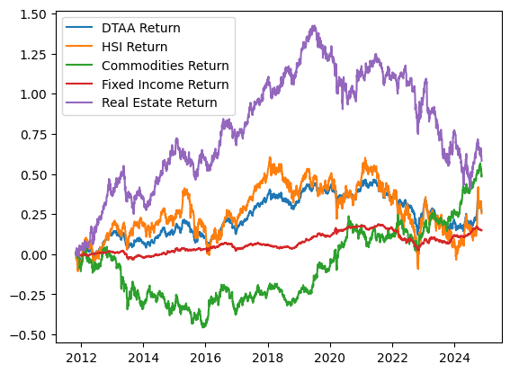
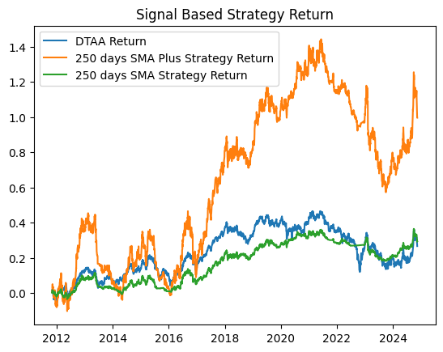
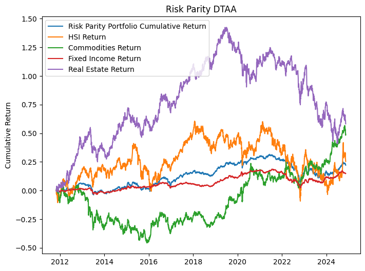

Dynamic Tactical Asset Allocation
May 15, 2025Dynamic Tactical Asset Allocation (DTAA) is a strategy that uses a combination of different asset classes to create a portfolio that is optimized for the current market conditions.

Table of Contents
Dynamic Tactical Asset Allocation in Hong Kong Markets
This analysis implements and adapts various tactical asset allocation strategies based on the research paper "Quantitative Methods of Dynamic Tactical Asset Allocation" by Mohamed Aziz Zardi. The strategies aim to enhance portfolio performance while managing downside risk in the Hong Kong market context.
Strategy Overview
| Strategy | Mechanism | Signal | Asset Allocation |
|---|---|---|---|
| SMA | 250-day simple moving average |
|
|
| SMA Plus | SMA with volatility overlay |
|
|
| Risk Parity | Equal risk contribution across assets | N/A |
|
Asset Selection
The following instruments were selected to represent each asset class in the Hong Kong market:
- Equities: Hang Seng Index (HSI) - Represents the largest and most liquid stocks in the Hong Kong market.
- Fixed Income: HKD bond fund from a Mandatory Provident Fund Scheme - Selected due to limited fixed income options in the local market.
- Commodities: SPDR® Gold Shares (2840.HK) - The most liquid commodity ETF in Hong Kong, denominated in HKD.
- Real Estate: Link REIT (823.HK) - Asia's largest REIT, focusing on retail properties in Hong Kong. Note: As a constituent of HSI, its performance shows some correlation with the broader market.
- Cash/Risk-Free Rate: Overnight HIBOR Rate - Represents the local money market rate.
Data and Methodology
The analysis covers the period from November 1, 2010, to November 15, 2024, with return calculations starting from November 1, 2011. For simplicity, the analysis excludes dividend reinvestment and corporate actions. All data is sourced from LSEG Workspace.
Data Preparation
In this section, we prepare and process the data for implementing the dynamic tactical asset allocation strategy:
import pandas as pd
import numpy as np
import time
import matplotlib.pyplot as plt
pd.set_option('display.max_columns', 30)
data = pd.read_excel("D:/project/DTAA data 3.xlsx")
data["Date"] = pd.to_datetime(data['Date'])
data.set_index("Date", inplace=True)
# data download link : https://docs.google.com/spreadsheets/d/1uf38KCtFQGtK0LH5xQERpr1ZV1bnxikh/edit?usp=sharing&ouid=114485432635242415083&rtpof=true&sd=true
data_sma = data[::-1].copy()
for column in data_sma.columns[:4]:
name = column + "_250_SMA"
data_sma[name] = data_sma[column].rolling(window=250).mean()
name = column + "_daily_return"
data_sma[name] = (data_sma[column] / data_sma[column].shift(1)) -1
data_sma["Cash_daily_return"] = (1 + data_sma['Overnight HIBOR'] / 100) ** (1/365) -1
data_sma_return = data_sma[249:].copy()
data_sma_return["portfolio_daily_return"] =
(np.where(data_sma_return["HKD bond fund"] >= data_sma_return["HKD bond fund_250_SMA"], data_sma_return["HKD bond fund_daily_return"].shift(-1), data_sma_return['Cash_daily_return'].shift(-1))
+ np.where(data_sma_return["Gold ETF"] >= data_sma_return["Gold ETF_250_SMA"], data_sma_return["Gold ETF_daily_return"].shift(-1), data_sma_return['Cash_daily_return'].shift(-1))
+ np.where(data_sma_return["HSI"] >= data_sma_return["HSI_250_SMA"], data_sma_return["HSI_daily_return"].shift(-1), data_sma_return['Cash_daily_return'].shift(-1))
+ np.where(data_sma_return["Link REIT"] >= data_sma_return["Link REIT_250_SMA"], data_sma_return["Link REIT_daily_return"].shift(-1), data_sma_return['Cash_daily_return'].shift(-1)) ) /4
data_sma_returnCode Explanation
This code section implements the core data preparation components:
- Data Loading and Initial Setup:
- Imports essential Python libraries for data analysis
- Loads data from Excel file and converts date column to datetime
- Sets date as the index for time series analysis
- Technical Indicators Calculation:
- Creates 250-day Simple Moving Average (SMA) for each asset
- Calculates daily returns for each asset
- Computes cash returns based on Overnight HIBOR rates
Dynamic Tactical Asset Allocation (DTAA)
The Dynamic Tactical Asset Allocation strategy takes a more sophisticated approach by considering both trend and volatility signals across the entire portfolio. This strategy aggregates signals from all assets to make portfolio-wide allocation decisions.
Strategy Implementation
The DTAA strategy uses a weighted approach to determine the overall market trend and volatility conditions:
- Trend Signal: Weighted average of percentage differences from 250-day SMA across all assets
- Equities: 50% weight
- Fixed Income: 20% weight
- Commodities: 15% weight
- Real Estate: 15% weight
- Volatility Signal: Similar weighted average of volatility conditions across all assets
Asset Allocation Rules
Based on the combined trend and volatility signals, the strategy implements one of four distinct asset allocation regimes:
HKD bond fund Gold ETF HSI Link REIT Overnight HIBOR HKD bond fund_250_SMA HKD bond fund_daily_return Gold ETF_250_SMA Gold ETF_daily_return HSI_250_SMA HSI_daily_return Link REIT_250_SMA Link REIT_daily_return Cash_daily_return portfolio_daily_return
Date
2011-11-02 13.119 1308.0 19733.71 26.578867 0.05000 12.761804 0.002139 1155.892 0.009259 22179.15640 0.018779 24.716500 -0.005455 0.000001 0.002304
2011-11-03 13.154 1307.0 19242.50 26.773228 0.05000 12.763116 0.002668 1156.992 -0.000765 22161.51464 -0.024892 24.729911 0.007313 0.000001 -0.000139
2011-11-04 13.120 1331.0 19842.79 26.335916 0.05000 12.764308 -0.002585 1158.208 0.018363 22146.20012 0.031196 24.740989 -0.016334 0.000001 0.002464
2011-11-07 13.122 1339.0 19677.89 26.433096 0.05000 12.765500 0.000152 1159.456 0.006011 22128.33300 -0.008310 24.752262 0.003690 0.000001 0.003709
2011-11-08 13.141 1352.0 19678.47 26.530277 0.05000 12.766700 0.001448 1160.748 0.009709 22108.90436 0.000029 24.763341 0.003676 0.000001 0.008491
... ... ... ... ... ... ... ... ... ... ... ... ... ... ... ...
2024-11-11 15.134 1914.0 20426.93 36.400000 4.47524 14.794940 -0.001320 1659.978 -0.008290 17660.41576 -0.014534 36.543800 0.000000 0.000120 -0.014115
2024-11-12 15.111 1863.0 19846.88 36.350000 3.82345 14.799148 -0.001520 1661.678 -0.026646 17667.93692 -0.028396 36.531200 -0.001374 0.000103 0.000789
2024-11-13 15.102 1872.0 19823.45 36.000000 3.81964 14.803476 -0.000596 1663.456 0.004831 17676.55008 -0.001181 36.523600 -0.009629 0.000103 -0.009305
2024-11-14 15.120 1836.5 19435.81 35.500000 3.93024 14.807752 0.001192 1665.098 -0.018964 17684.01948 -0.019555 36.512000 -0.013889 0.000106 0.000971
2024-11-15 15.131 1843.0 19426.34 35.150000 3.87310 14.812004 0.000728 1666.826 0.003539 17691.67968 -0.000487 36.494600 -0.009859 0.000104 NaN
3209 rows × 15 columns
plt.plot(data_sma_return["portfolio_daily_return"].cumsum(), label="250 days SMA Strategy Return")
plt.plot(data_sma_return["HSI_daily_return"].cumsum(), label= "HSI Return")
plt.plot(data_sma_return['Gold ETF_daily_return'].cumsum(), label= "Commodities Return")
plt.plot(data_sma_return["HKD bond fund_daily_return"].cumsum(), label="Fixed Income Return")
plt.plot(data_sma_return["Link REIT_daily_return"].cumsum(), label= "Real Estate Return")
plt.legend()
HKD bond fund Gold ETF HSI Link REIT Overnight HIBOR HKD bond fund_250_SMA HKD bond fund_daily_return Gold ETF_250_SMA Gold ETF_daily_return HSI_250_SMA HSI_daily_return Link REIT_250_SMA Link REIT_daily_return Cash_daily_return
Date
2010-11-01 12.826 1032.0 23652.94 23.420501 0.09643 NaN NaN NaN NaN NaN NaN NaN NaN 0.000003
2010-11-02 12.822 1027.0 23671.42 23.566271 0.07607 NaN -0.000312 NaN -0.004845 NaN 0.000781 NaN 0.006224 0.000002
2010-11-03 12.824 1027.0 24144.67 23.614862 0.05821 NaN 0.000156 NaN 0.000000 NaN 0.019992 NaN 0.002062 0.000002
2010-11-04 12.841 1029.0 24535.63 23.760632 0.05000 NaN 0.001326 NaN 0.001947 NaN 0.016192 NaN 0.006173 0.000001
2010-11-05 12.854 1052.0 24876.82 24.246535 0.05000 NaN 0.001012 NaN 0.022352 NaN 0.013906 NaN 0.020450 0.000001
... ... ... ... ... ... ... ... ... ... ... ... ... ... ...
2024-11-11 15.134 1914.0 20426.93 36.400000 4.47524 14.794940 -0.001320 1659.978 -0.008290 17660.41576 -0.014534 36.5438 0.000000 0.000120
2024-11-12 15.111 1863.0 19846.88 36.350000 3.82345 14.799148 -0.001520 1661.678 -0.026646 17667.93692 -0.028396 36.5312 -0.001374 0.000103
2024-11-13 15.102 1872.0 19823.45 36.000000 3.81964 14.803476 -0.000596 1663.456 0.004831 17676.55008 -0.001181 36.5236 -0.009629 0.000103
2024-11-14 15.120 1836.5 19435.81 35.500000 3.93024 14.807752 0.001192 1665.098 -0.018964 17684.01948 -0.019555 36.5120 -0.013889 0.000106
2024-11-15 15.131 1843.0 19426.34 35.150000 3.87310 14.812004 0.000728 1666.826 0.003539 17691.67968 -0.000487 36.4946 -0.009859 0.000104
3458 rows × 14 columns
data_dtaa = data[::-1].copy()
data_dtaa["Cash_daily_return"] = (1 + data_dtaa['Overnight HIBOR'] / 100) ** (1/365) -1
for column in data_dtaa.columns[:4]:
name = column + "_250_SMA"
data_dtaa[name] = data_dtaa[column].rolling(window=250).mean()
name1 = column + "_daily_return"
data_dtaa[name1] = (data_dtaa[column] / data_dtaa[column].shift(1)) -1
name2 = column + "_20_days_volatility"
name3 = column + "_250_days_volatility"
data_dtaa[name2] = data_dtaa[name1].rolling(window=20).std() * np.sqrt(250)
data_dtaa[name3] = data_dtaa[name1].rolling(window=250).std() *np.sqrt(250)
name4 = column + "_strategy_return"
data_dtaa[name4] = np.where(
(data_dtaa[column] >= data_dtaa[name]) & (data_dtaa[name3] >= data_dtaa[name2]), data_dtaa[name1].shift(-1),
#Higher than 250 days SMA and low volatility np.where((data_dtaa[column] >= data_dtaa[name]) & (data_dtaa[name3] < data_dtaa[name2]), (data_dtaa[name1].shift(-1) * 0.7 + data_dtaa["Cash_daily_return"].shift(-1) * 0.3) ,
#Higher than 250 days SMA and high volatility np.where((data_dtaa[column] < data_dtaa[name]) & (data_dtaa[name3] >= data_dtaa[name2]), (data_dtaa[name1].shift(-1) * 0.3 + data_dtaa["Cash_daily_return"].shift(-1) * 0.7) ,
#Lower than 250 days SMA and low volatility data_dtaa["Cash_daily_return"].shift(-1)))
#Lower than 250 days SMA and high volatility
)
data_dtaa=data_dtaa[250:].copy()
data_dtaa["portfolio_daily_return"]=data_dtaa["HKD bond fund_strategy_return"]+ data_dtaa["Gold ETF_strategy_return"] +data_dtaa["HSI_strategy_return"] +data_dtaa['Link REIT_strategy_return']Code Explanation
This code section implements the DTAA strategy with the following key components:
- Data Preparation:
- Creates a copy of the original dataset
- Calculates cash returns based on HIBOR rates
- Technical Indicators:
- Computes 250-day SMA for each asset
- Calculates daily returns
- Determines 20-day and 250-day volatility measures
HKD bond fund Gold ETF HSI Link REIT Overnight HIBOR Cash_daily_return HKD bond fund_250_SMA HKD bond fund_daily_return HKD bond fund_20_days_volatility HKD bond fund_250_days_volatility HKD bond fund_strategy_return Gold ETF_250_SMA Gold ETF_daily_return Gold ETF_20_days_volatility Gold ETF_250_days_volatility Gold ETF_strategy_return HSI_250_SMA HSI_daily_return HSI_20_days_volatility HSI_250_days_volatility HSI_strategy_return Link REIT_250_SMA Link REIT_daily_return Link REIT_20_days_volatility Link REIT_250_days_volatility Link REIT_strategy_return portfolio_daily_return
Date
2011-11-03 13.154 1307.0 19242.50 26.773228 0.05000 0.000001 12.763116 0.002668 0.035790 0.032933 -0.001809 1156.992 -0.000765 0.186543 0.201364 0.018363 22161.51464 -0.024892 0.348351 0.238570 0.000001 24.729911 0.007313 0.323878 0.197180 -0.011433 0.005122
2011-11-04 13.120 1331.0 19842.79 26.335916 0.05000 0.000001 12.764308 -0.002585 0.036543 0.033040 0.000107 1158.208 0.018363 0.193734 0.202020 0.006011 22146.20012 0.031196 0.348405 0.240690 0.000001 24.740989 -0.016334 0.325764 0.197825 0.002583 0.008702
2011-11-07 13.122 1339.0 19677.89 26.433096 0.05000 0.000001 12.765500 0.000152 0.033908 0.033040 0.001014 1159.456 0.006011 0.193854 0.202076 0.009709 22128.33300 -0.008310 0.351541 0.239923 0.000001 24.752262 0.003690 0.321716 0.197844 0.002574 0.013298
2011-11-08 13.141 1352.0 19678.47 26.530277 0.05000 0.000001 12.766700 0.001448 0.034010 0.033045 -0.000586 1160.748 0.009709 0.194520 0.202256 0.000000 22108.90436 0.000029 0.344879 0.239324 0.000001 24.763341 0.003676 0.301959 0.197789 0.024359 0.023775
2011-11-09 13.130 1352.0 20014.43 27.453491 0.05000 0.000001 12.767804 -0.000837 0.033888 0.033045 0.001973 1161.948 0.000000 0.194867 0.201139 -0.017751 22089.45480 0.017072 0.347240 0.239540 0.000001 24.776169 0.034799 0.297079 0.199751 -0.006194 -0.021971
... ... ... ... ... ... ... ... ... ... ... ... ... ... ... ... ... ... ... ... ... ... ... ... ... ... ... ... ... ...
2024-11-11 15.134 1914.0 20426.93 36.400000 4.47524 0.000120 14.794940 -0.001320 0.018684 0.033217 -0.001520 1659.978 -0.008290 0.138440 0.142440 -0.026646 17660.41576 -0.014534 0.265952 0.256206 -0.019847 36.543800 0.000000 0.221069 0.272142 -0.000340 -0.048352
2024-11-12 15.111 1863.0 19846.88 36.350000 3.82345 0.000103 14.799148 -0.001520 0.018266 0.033091 -0.000596 1661.678 -0.026646 0.167589 0.145105 0.003412 17667.93692 -0.028396 0.252774 0.257320 -0.001181 36.531200 -0.001374 0.213352 0.272101 -0.002817 -0.001180
2024-11-13 15.102 1872.0 19823.45 36.000000 3.81964 0.000103 14.803476 -0.000596 0.017224 0.032960 0.001192 1663.456 0.004831 0.164093 0.144909 -0.013243 17676.55008 -0.001181 0.252767 0.256757 -0.019555 36.523600 -0.009629 0.212646 0.269244 -0.004093 -0.035698
2024-11-14 15.120 1836.5 19435.81 35.500000 3.93024 0.000106 14.807752 0.001192 0.018181 0.032916 0.000728 1665.098 -0.018964 0.174651 0.146279 0.002509 17684.01948 -0.019555 0.259292 0.257470 -0.000310 36.512000 -0.013889 0.216351 0.269267 -0.002885 0.000042
2024-11-15 15.131 1843.0 19426.34 35.150000 3.87310 0.000104 14.812004 0.000728 0.018192 0.032907 NaN 1666.826 0.003539 0.172432 0.145838 NaN 17691.67968 -0.000487 0.218530 0.257444 NaN 36.494600 -0.009859 0.212436 0.267880 NaN NaN
3208 rows × 27 columns
plt.plot(data_dtaa["portfolio_daily_return"].cumsum(), label="DTAA Strategy Return")
plt.plot(data_dtaa["HSI_daily_return"].cumsum(), label= "HSI Return")
plt.plot(data_dtaa['Gold ETF_daily_return'].cumsum(), label= "Commodities Return")
plt.plot(data_dtaa["HKD bond fund_daily_return"].cumsum(), label="Fixed Income Return")
plt.plot(data_dtaa["Link REIT_daily_return"].cumsum(), label= "Real Estate Return")
plt.legend()portfolio_return = data_dtaa["portfolio_daily_return"][:-1].cumsum().iloc[-1]
print("DTAA Strategy Return: ", portfolio_return)
risk=data_dtaa["portfolio_daily_return"].std()
print("Sharpe Ratio is : ", data_dtaa["portfolio_daily_return"].mean() / risk * np.sqrt(250))| Trend | Volatility | Asset Allocation |
|---|---|---|
| Positive | Low |
|
| Positive | High |
|
| Negative | Low |
|
| Negative | High |
|
data_dtaa = data[::-1].copy()
for column in data_dtaa.columns[:4]:
name = column + "_250_SMA"
data_dtaa[name] = data_dtaa[column].rolling(window=250).mean()
name1 = column + "_daily_return"
data_dtaa[name1] = (data_dtaa[column] / data_dtaa[column].shift(1)) -1
name2 = column + "_20_days_volatility"
name3 = column + "_250_days_volatility"
data_dtaa[name2] = data_dtaa[name1].rolling(window=20).std() * np.sqrt(250)
data_dtaa[name3] = data_dtaa[name1].rolling(window=250).std() *np.sqrt(250)
name4 = column + "_SMA_diff"
data_dtaa[name4] = (data_dtaa[column]- data_dtaa[name]) / data_dtaa[name]
name5 = column + "_Volatility_diff"
data_dtaa[name5] = (data_dtaa[name3]- data_dtaa[name2]) / data_dtaa[name2]
data_dtaa = data_dtaa[250:].copy()
sma_columns = ["HKD bond fund_SMA_diff", "Gold ETF_SMA_diff", "HSI_SMA_diff", "Link REIT_SMA_diff"]
data_dtaa["SMA_signal"] = np.where(data_dtaa[sma_columns].sum(axis=1) >= 0, "Positive", "Negative")
vol_columns = ["HKD bond fund_Volatility_diff", "Gold ETF_Volatility_diff", "HSI_Volatility_diff", "Link REIT_Volatility_diff"]
data_dtaa["Vol_signal"] = np.where(data_dtaa[vol_columns].sum(axis=1) >= 0, "Low", "High")
data_dtaa["Combined_signal"] = data_dtaa["SMA_signal"] + " " + data_dtaa["Vol_signal"]
combination_counts = data_dtaa["Combined_signal"].value_counts()
plt.figure(figsize=(6, 6))
combination_counts.plot(kind='bar')
plt.title('Counts of Signal Combinations')
plt.xlabel('Signal Combination')
plt.ylabel('Count')
plt.xticks(rotation=45)
plt.show()Code Explanation
This code section implements the signal generation strategy:
- Technical Indicators:
- Calculates 250-day Simple Moving Average (SMA) for each asset
- Computes daily returns and volatility measures
- Derives SMA and volatility differences for signal generation
- Signal Generation:
- Creates SMA signals based on price deviation from moving average
- Generates volatility signals comparing short-term vs long-term volatility
- Combines both signals to create a comprehensive trading signal

Code Explanation
This code section implements the core strategy components:
- Data Processing:
- Calculates 250-day Simple Moving Average (SMA)
- Computes daily returns for each asset
- Calculates 20-day and 250-day volatility measures
- Determines SMA and volatility differences
- Signal Generation:
- Aggregates SMA differences for trend signals
- Aggregates volatility differences for volatility signals
- Combines signals to create final allocation decisions
data_dtaa["portfolio_daily_return"]=np.where(
data_dtaa["Combined_signal"] == "Positive Low", (data_dtaa['HKD bond fund_daily_return'].shift(-1) * 0.25 + data_dtaa['Gold ETF_daily_return'].shift(-1) * 0.15 + data_dtaa["HSI_daily_return"].shift(-1) * 0.45 + data_dtaa["Link REIT_daily_return"].shift(-1) * 0.15),
np.where(data_dtaa["Combined_signal"] == "Positive High",(data_dtaa['HKD bond fund_daily_return'].shift(-1) * 0.3 + data_dtaa['Gold ETF_daily_return'].shift(-1) * 0.15 + data_dtaa["HSI_daily_return"].shift(-1) * 0.4 + data_dtaa["Link REIT_daily_return"].shift(-1) * 0.15),
np.where(data_dtaa["Combined_signal"] == "Negative Low",(data_dtaa['HKD bond fund_daily_return'].shift(-1) * 0.4 + data_dtaa['Gold ETF_daily_return'].shift(-1) * 0.10 + data_dtaa["HSI_daily_return"].shift(-1) * 0.3 + data_dtaa["Link REIT_daily_return"].shift(-1) * 0.20),
(data_dtaa['HKD bond fund_daily_return'].shift(-1) * 0.5 + data_dtaa['Gold ETF_daily_return'].shift(-1) * 0.05 + data_dtaa["HSI_daily_return"].shift(-1) * 0.2 + data_dtaa["Link REIT_daily_return"].shift(-1) * 0.25)))
)
plt.plot(data_dtaa["portfolio_daily_return"].cumsum(), label="DTAA Return")
plt.plot(data_dtaa["HSI_daily_return"].cumsum(), label= "HSI Return")
plt.plot(data_dtaa['Gold ETF_daily_return'].cumsum(), label= "Commodities Return")
plt.plot(data_dtaa["HKD bond fund_daily_return"].cumsum(), label="Fixed Income Return")
plt.plot(data_dtaa["Link REIT_daily_return"].cumsum(), label= "Real Estate Return")
plt.legend()
Code Explanation
This code section implements the portfolio construction:
- Portfolio Allocation:
- Implements conditional allocation based on combined signals
- Applies different weights for each market condition
- Calculates daily portfolio returns
- Performance Visualization:
- Plots cumulative returns for the strategy
- Compares performance against individual asset classes
- Shows relative performance over time
portfolio_return = data_dtaa["portfolio_daily_return"][:-1].cumsum().iloc[-1]
print("SMA Plus Strategy Return: ", portfolio_return)
risk=data_dtaa["portfolio_daily_return"].std()
print("Sharpe Ratio is : ", data_dtaa["portfolio_daily_return"].mean() / risk * np.sqrt(250))
plt.plot(data_dtaa["portfolio_daily_return"].cumsum(), label="DTAA Return")
plt.plot(data_sma_plus["portfolio_daily_return"].cumsum(), label="250 days SMA Plus Strategy Return")
plt.plot(data_sma_return["portfolio_daily_return"].cumsum(), label="250 days SMA Strategy Return")
plt.legend()
plt.title("Signal Based Strategy Return")
DTAA with Risk Parity
While the previous strategies showed promising results, we can further enhance the portfolio by implementing a risk parity approach. This strategy dynamically adjusts asset allocation based on risk rather than predetermined percentages, with weekly rebalancing and no leverage or short positions.
Strategy Implementation
The Risk Parity DTAA strategy implements the following key features:
- Weekly portfolio rebalancing
- No leverage or short positions allowed
- Asset weights constrained between 0% and 100%
- No cash holdings in the portfolio
- Risk-based allocation using inverse volatility weighting
data_risk_parity = data[::-1].copy()
for column in data_risk_parity.columns[:4]:
name1 = column + "_daily_return"
data_risk_parity[name1] = (data_risk_parity[column] / data_risk_parity[column].shift(1)) -1
name2 = column + "_monthly_volatility"
data_risk_parity[name2] = data_risk_parity[name1].rolling(window=20).std() * np.sqrt(250)
def adjust_weights(df, stocks):
weights = pd.DataFrame(index=df.index, columns=stocks)
for i in range(0, len(df), 7):
volatilities = df.loc[df.index[i], [stock + '_monthly_volatility' for stock in stocks]]
inverse_volatility = 1 / volatilities
total_inverse_volatility = inverse_volatility.sum()
weekly_weights = (inverse_volatility / total_inverse_volatility).values
n_days = min(7, len(df) - i)
weights.iloc[i:i+n_days, :] = np.tile(weekly_weights, (n_days, 1))
return weights
stock_columns = ['HSI', 'HKD bond fund', 'Gold ETF', 'Link REIT']
data_risk_parity=data_risk_parity[250:].copy()
weights = adjust_weights(data_risk_parity, stock_columns)
data_risk_parity['portfolio_daily_return'] = (weights * data_risk_parity[[stock + '_daily_return' for stock in stock_columns]].values).sum(axis=1)
data_risk_parity['portfolio_cumulative_return'] = data_risk_parity['portfolio_daily_return'].cumsum()Code Explanation
This code section implements the Risk Parity strategy with the following components:
- Data Preparation:
- Creates a copy of the original dataset
- Calculates daily returns for each asset
- Computes monthly volatility using 20-day rolling window
- Weight Adjustment:
- Implements weekly rebalancing logic
- Calculates inverse volatility weights
- Applies weights to portfolio construction
plt.figure(figsize=(8, 6))
plt.plot( data_risk_parity['portfolio_cumulative_return'], label='Risk Parity Portfolio Cumulative Return')
plt.plot(data_risk_parity["HSI_daily_return"].cumsum(), label= "HSI Return")
plt.plot(data_risk_parity['Gold ETF_daily_return'].cumsum(), label= "Commodities Return")
plt.plot(data_risk_parity["HKD bond fund_daily_return"].cumsum(), label="Fixed Income Return")
plt.plot(data_risk_parity["Link REIT_daily_return"].cumsum(), label= "Real Estate Return")
plt.title('Risk Parity DTAA')
plt.ylabel('Cumulative Return')
plt.legend()
plt.show()
portfolio_return = data_risk_parity["portfolio_daily_return"].cumsum().iloc[-1]
print("SMA Plus Strategy Return: ", portfolio_return)
risk=data_risk_parity["portfolio_daily_return"].std()
print("Sharpe Ratio is : ", data_risk_parity["portfolio_daily_return"].mean() / risk * np.sqrt(250))Conclusion
Risk Parity DTAA can reduce the volatility of the portfolio but has worse return compared with HSI and other strategies.
plt.figure(figsize=(8, 6))
plt.plot( data_risk_parity['portfolio_cumulative_return'], label='Risk Parity Portfolio Cumulative Return')
plt.plot(data_dtaa["portfolio_daily_return"].cumsum(), label="Risk Parity DTAA Return")
plt.plot(data_sma_plus["portfolio_daily_return"].cumsum(), label="250 days SMA Plus Strategy Return")
plt.plot(data_sma_return["portfolio_daily_return"].cumsum(), label="250 days SMA Strategy Return")
plt.title('Return of different asset allocation strategies')
plt.ylabel('Cumulative Return')
plt.legend()
plt.show()Market Context and Challenges
But when multiple assets fall together from late 2021 to 2023 as the inflation threatened the market led to exponential increase of interest rate along with China policies in COVID-19, everything dropped alot. Since the bond market has been bullish for more than 30 years, having fixed income assets in the portfolio can reduce risk of the portfolio and protect against market crash. Now the long term bond bullish market has ended?? Should we give up the idea of holding fixed income assets into our portfolio to reduce risk as they are very volatile last few years.
Strategy Improvements
I think we can imporve those strategies return by:
- Fixed Income Selection:
- Select fixed income products that are less volatile such as short term bills or treasury floating rate notes, or simply use money market fund
- We can see during the interest rate hike, huge capital inflow to short term fixed income products
- As most people predict next year when Trump crown himself as US President, he will impose many tariff and lead to a global trade wars thus inflation will go up again
- Having fixed income assets that will benefit from that potential inflation but also will not suffer a lot if no inflation is important
- Market Characteristics:
- Hong Kong market is famous for sentiment driven, suddenly there is some news/rumor so market go up exponentially for many days and if you don't harvest profit quickly...
- During that period the short term volatility becomes way higher than long term volatility, thus limiting the expourse and upside return
- I think the logic SMA Plus Strategy is to hold less in overshoot and hold more during oversold
- But is that match the characteristics of HK market? Take the recent short term euphoria in HK, if you follow the SMA Plus Strategy, you will buy less in the uptrend, and late to cash out all equities position after it crash.
- And by ignoring those short term euphoria in the whole backtest period, we see HSI is just range trading with low volatility
- Maybe we do the opposite, if short term volatility is higher than long term volatility by XX%, we buy more??
- DTAA Framework Improvements:
- The DTAA main drawbacks are (1) assuming equities and other asset classes are negatively correlated & (2) no option for holding cash
- The DTAA asset allocation weightings may only work in normal uptrend market
- We may (1) add holding cash option (2) instead of considering one aggregate signal and volatility of the portfolio and determine weigthings within the framework, we also consider individual assets performance
- Such as the gold price is going up crazy, if the DTAA allows shifting more weightings from other assets to gold not just capped at 15%, it will greatly imporve the return of the portfolio
- Market Selection:
- We can choose a different investment environment?
- It is obvious that the strategies performance of this thesis are much better than mine as he use US market to backtest